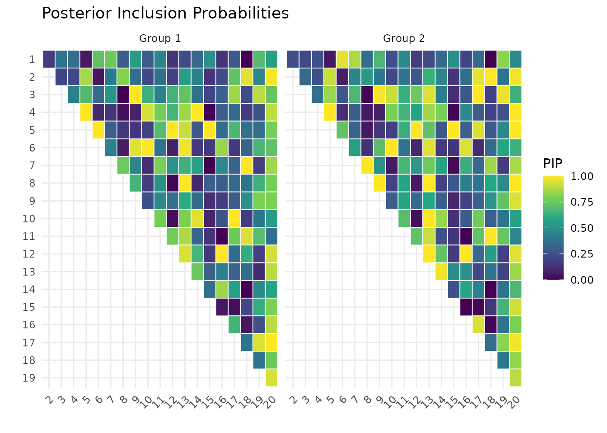
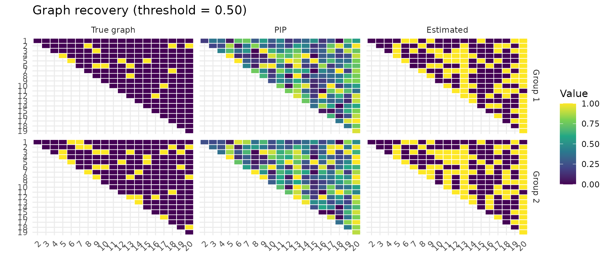
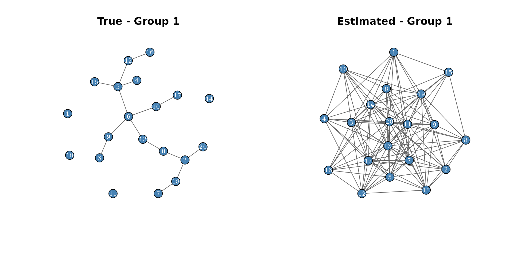
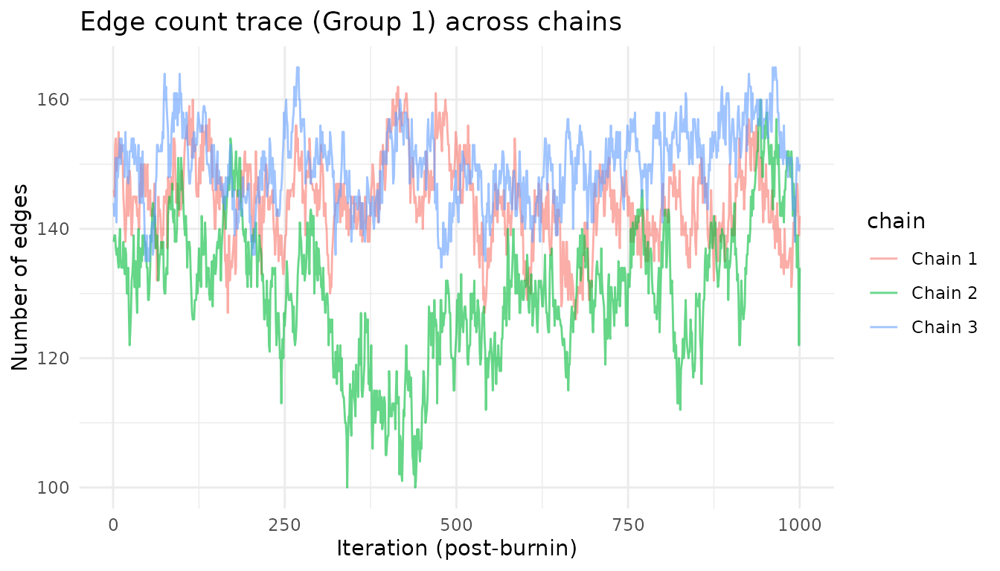
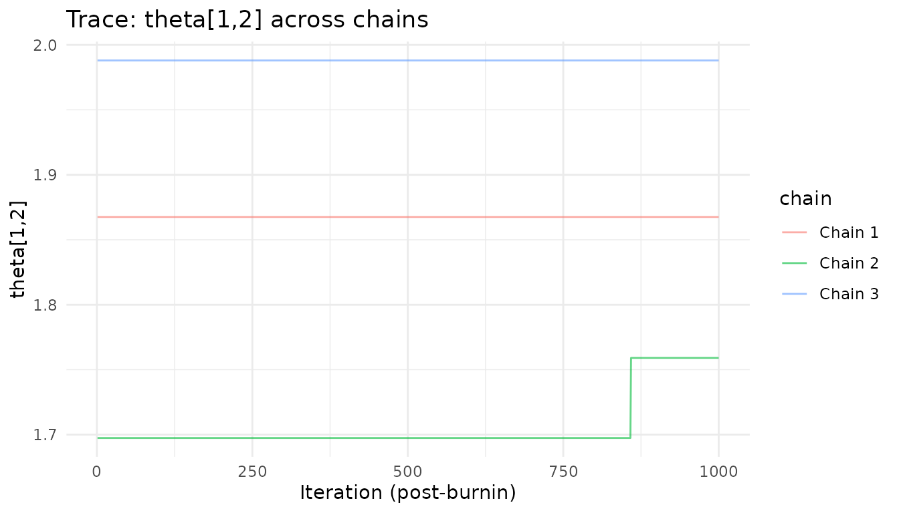

Getting Started with multiGGM
multiGGMr-tutorial.RmdIntroduction
The multiGGM package implements the Bayesian method of Peterson, Stingo & Vannucci (2015, JASA) for joint inference of multiple Gaussian graphical models (GGMs). Given data from groups, the method simultaneously estimates group-specific precision matrices and their associated conditional independence graphs , while borrowing strength across groups through a Markov random field (MRF) prior.
This vignette walks through:
- Simulating multi-group data with known graph structure
- Fitting the model with
multiggm_mcmc() - Checking convergence
- Extracting and interpreting results
- Comparing estimated graphs to ground truth
- Running and summarizing multiple MCMC chains
1. Simulate data
We generate data from two groups with variables and observations each, using a banded (AR-2) graph structure.
library(multiGGM)
sim <- simulate_multiggm(
K = 2, p = 20, n = 100,
graph_type = "random",
perturb_prob = 0.1,
seed = 42
)
cat("True edge counts:\n")
#> True edge counts:
for (k in 1:sim$K) {
adj_k <- sim$adj_list[[k]]
cat(sprintf(" Group %d: %d edges\n", k, sum(adj_k[upper.tri(adj_k)])))
}
#> Group 1: 15 edges
#> Group 2: 32 edges2. Fit the model
We pass raw data matrices directly. The function computes cross-product matrices internally after column-centering.
fit <- multiggm_mcmc(
data_list = sim$data_list,
burnin = 200,
nsave = 100,
thin = 1,
seed = 123
)
fit
#> <multiggm_fit>
#> K groups: 2
#> p nodes : 20
#> Posterior draws: 1003. Check convergence
Summary
The summary() method reports acceptance rates and edge
counts. Acceptance rates between 20-60% are generally healthy.
summary(fit, pip_threshold = .3)
#> multiGGM MCMC Summary
#> =====================
#> Groups (K): 2 | Nodes (p): 20 | Posterior draws: 100
#>
#> Acceptance rates:
#> gamma (edge toggle): 1.0%
#> theta (within-model): 10.1%
#> nu (edge log-odds): 54.8%
#>
#> Selected edges (PIP >= 0.3 ):
#> Group 1 : 128 edges
#> Group 2 : 130 edges
#>
#> Graph similarity (theta):
#> theta[1,2]: mean = 1.264, P(nonzero) = 100.0%4. Extract results
Posterior inclusion probabilities (PIP)
PIPs indicate how often each edge was included across posterior samples. Higher PIP = stronger evidence for that edge.
pip <- pip_edges(fit)
plot(fit, type = "pip")
Estimated precision and partial correlations
The coef() method returns posterior mean precision
matrices, while fitted() returns posterior mean partial
correlations.
omega_hat <- coef(fit)
cat("Posterior mean precision (Group 1, first 5x5 block):\n")
#> Posterior mean precision (Group 1, first 5x5 block):
round(omega_hat[[1]][1:5, 1:5], 3)
#> [,1] [,2] [,3] [,4] [,5]
#> [1,] 1.325 -0.010 -0.074 -0.053 0.013
#> [2,] -0.010 1.019 -0.001 0.025 0.109
#> [3,] -0.074 -0.001 1.124 -0.093 0.001
#> [4,] -0.053 0.025 -0.093 1.696 0.671
#> [5,] 0.013 0.109 0.001 0.671 1.413
pcor_hat <- fitted(fit)
cat("Posterior mean partial correlations (Group 1, first 5x5 block):\n")
#> Posterior mean partial correlations (Group 1, first 5x5 block):
round(pcor_hat[[1]][1:5, 1:5], 3)
#> [,1] [,2] [,3] [,4] [,5]
#> [1,] 1.000 0.009 0.060 0.035 -0.009
#> [2,] 0.009 1.000 0.001 -0.018 -0.091
#> [3,] 0.060 0.001 1.000 0.064 -0.002
#> [4,] 0.035 -0.018 0.064 1.000 -0.432
#> [5,] -0.009 -0.091 -0.002 -0.432 1.000Credible intervals
pcor_draws <- posterior_pcor(fit)
ci <- posterior_ci(pcor_draws)
# Example: 95% CI for edge (1,2) in group 1
cat(sprintf("pcor[1,2] Group 1: %.3f (%.3f, %.3f)\n",
ci$median[1, 2, 1], ci$lower[1, 2, 1], ci$upper[1, 2, 1]))
#> pcor[1,2] Group 1: -0.000 (-0.026, 0.112)5. Compare to ground truth
Visual comparison
plot_recovery() shows the true graph, PIP heatmap, and
thresholded estimate side-by-side.
cm <- plot_recovery(fit, sim$adj_list, pip_threshold = 0.5)
Confusion metrics
for (k in seq_along(cm)) {
cat(sprintf("Group %d: TP=%d, FP=%d, FN=%d, TN=%d, TPR=%.2f, FPR=%.2f\n",
k, cm[[k]]["TP"], cm[[k]]["FP"], cm[[k]]["FN"], cm[[k]]["TN"],
cm[[k]]["TPR"], cm[[k]]["FPR"]))
}
#> Group 1: TP=15, FP=70, FN=0, TN=105, TPR=1.00, FPR=0.40
#> Group 2: TP=30, FP=59, FN=2, TN=99, TPR=0.94, FPR=0.376. Network visualization
We can visualize the estimated graph as a network.
par(mfrow = c(1, 2))
plot_network(sim$adj_list[[1]], main = "True - Group 1", vertex_size = 12)
est_adj <- (pip[, , 1] >= 0.3) * 1L
plot_network(est_adj, main = "Estimated - Group 1", vertex_size = 12)
7. Differential edges
For groups, we can identify edges that differ between groups.
pip_diff <- pip_diff_edge(fit)
cat("Edges with P(differential) > 0.5:",
sum(pip_diff[upper.tri(pip_diff)] > 0.5), "\n")
#> Edges with P(differential) > 0.5: 0
pcor_draws <- posterior_pcor(fit)
diff_prob <- diff_prob_pcor(pcor_draws, delta = 0.1)
cat("Edges with P(|pcor diff| > 0.1) > 0.5:",
sum(diff_prob[upper.tri(diff_prob)] > 0.5), "\n")
#> Edges with P(|pcor diff| > 0.1) > 0.5: 568. Running multiple chains
Running multiple MCMC chains from different starting points is
important for assessing convergence. The multiggm_mcmc()
function supports this via the nchains argument. Chains can
be run in parallel with parallel = TRUE.
Fitting multiple chains
fit_mc <- multiggm_mcmc(
data_list = sim$data_list,
burnin = 2000,
nsave = 1000,
nchains = 3,
parallel = TRUE,
seed = 42
)The result is a multiggm_fit_list object containing all
chains:
fit_mc
#> <multiggm_fit_list>
#> Chains: 3
#> K groups: 2Accessing individual chains
Each chain is a full multiggm_fit object. Access them
via $chains:
# Summary of chain 1
summary(fit_mc$chains[[1]], pip_threshold = 0.3)
#> multiGGM MCMC Summary
#> =====================
#> Groups (K): 2 | Nodes (p): 20 | Posterior draws: 1000
#>
#> Acceptance rates:
#> gamma (edge toggle): 0.2%
#> theta (within-model): 3.6%
#> nu (edge log-odds): 61.7%
#>
#> Selected edges (PIP >= 0.3 ):
#> Group 1 : 186 edges
#> Group 2 : 186 edges
#>
#> Graph similarity (theta):
#> theta[1,2]: mean = 1.868, P(nonzero) = 100.0%Most utility functions accept a chain argument to select
which chain to analyze:
# PIPs from chain 1 vs chain 2
pip_c1 <- pip_edges(fit_mc, chain = 1)
pip_c2 <- pip_edges(fit_mc, chain = 2)
idx <- upper.tri(pip_c1[, , 1])
cat(sprintf("PIP correlation between chain 1 and 2 (Group 1): %.3f\n",
cor(pip_c1[, , 1][idx], pip_c2[, , 1][idx])))
#> PIP correlation between chain 1 and 2 (Group 1): 0.832Comparing trace plots across chains
Overlaying trace plots from multiple chains is one of the most effective visual convergence diagnostics. Chains that have converged will mix and overlap, while chains stuck in different modes will show persistent separation.
library(ggplot2)
# Build a combined edge-count trace from all chains
trace_df <- do.call(rbind, lapply(seq_len(fit_mc$nchains), function(ch) {
ec <- edge_counts(fit_mc, chain = ch)
data.frame(
iteration = seq_len(nrow(ec)),
edges = ec[, 1],
chain = paste("Chain", ch),
stringsAsFactors = FALSE
)
}))
ggplot(trace_df, aes(x = iteration, y = edges, color = chain)) +
geom_line(alpha = 0.6) +
labs(title = "Edge count trace (Group 1) across chains",
x = "Iteration (post-burnin)", y = "Number of edges") +
theme_minimal()
# Overlay theta traces from all chains
theta_df <- do.call(rbind, lapply(seq_len(fit_mc$nchains), function(ch) {
data.frame(
iteration = seq_len(dim(fit_mc$chains[[ch]]$Theta_save)[3]),
theta = fit_mc$chains[[ch]]$Theta_save[1, 2, ],
chain = paste("Chain", ch),
stringsAsFactors = FALSE
)
}))
ggplot(theta_df, aes(x = iteration, y = theta, color = chain)) +
geom_line(alpha = 0.6) +
labs(title = "Trace: theta[1,2] across chains",
x = "Iteration (post-burnin)", y = "theta[1,2]") +
theme_minimal()
Pooling results across chains
To combine posterior samples from all chains, concatenate the saved arrays along the iteration dimension:
# Pool precision draws across all chains
pool_C <- abind::abind(
lapply(fit_mc$chains, function(ch) ch$C_save),
along = 4
)
cat(sprintf("Pooled draws: %d (from %d chains x %d draws each)\n",
dim(pool_C)[4], fit_mc$nchains, dim(fit_mc$chains[[1]]$C_save)[4]))
#> Pooled draws: 3000 (from 3 chains x 1000 draws each)
# Pool adjacency draws for combined PIPs
pool_adj <- abind::abind(
lapply(fit_mc$chains, function(ch) ch$adj_save),
along = 4
)
pip_pooled <- apply(pool_adj, c(1, 2, 3), mean)
cat(sprintf("Pooled edges (PIP > 0.5, Group 1): %d\n",
sum(pip_pooled[, , 1][upper.tri(pip_pooled[, , 1])] > 0.5)))
#> Pooled edges (PIP > 0.5, Group 1): 170Summary of multi-chain functions
| Task | Code |
|---|---|
| Fit multiple chains | multiggm_mcmc(..., nchains = 4, parallel = TRUE) |
| Access chain | fit$chains[[i]] |
| PIPs from chain | pip_edges(fit, chain = i) |
| Partial correlations from chain | posterior_pcor(fit, chain = i) |
| Precision matrices from chain | posterior_precision(fit, chain = i) |
| Edge counts from chain | edge_counts(fit, chain = i) |
| Pool draws across chains | abind::abind(lapply(fit$chains, \(ch) ch$C_save), along = 4) |